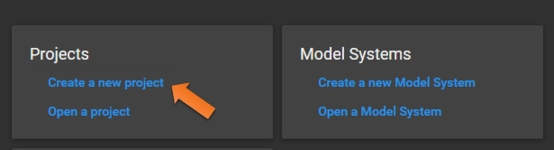
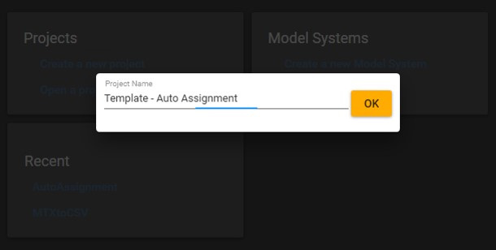
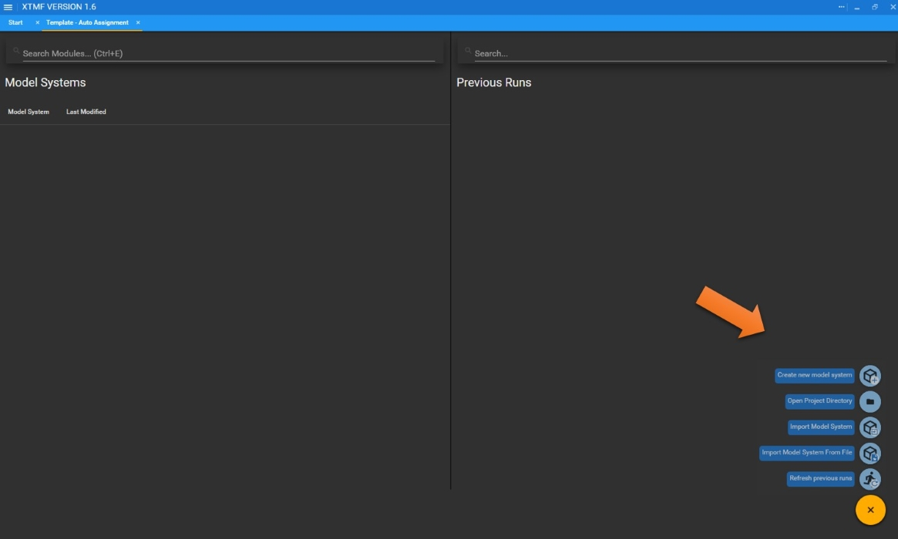
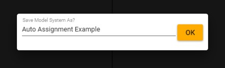
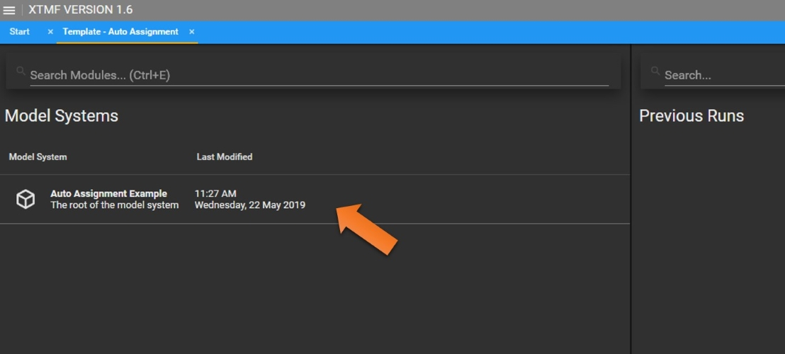
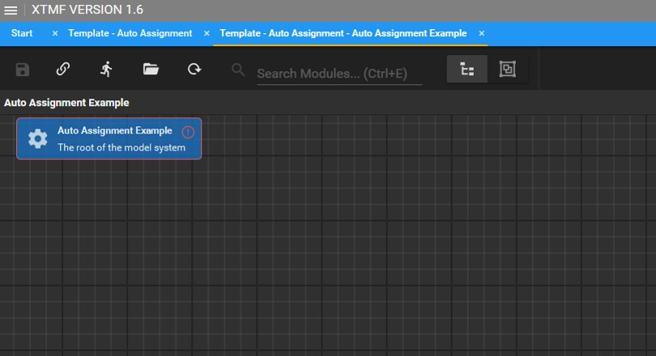
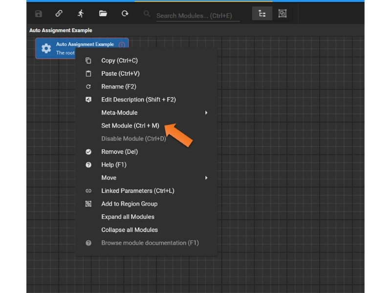
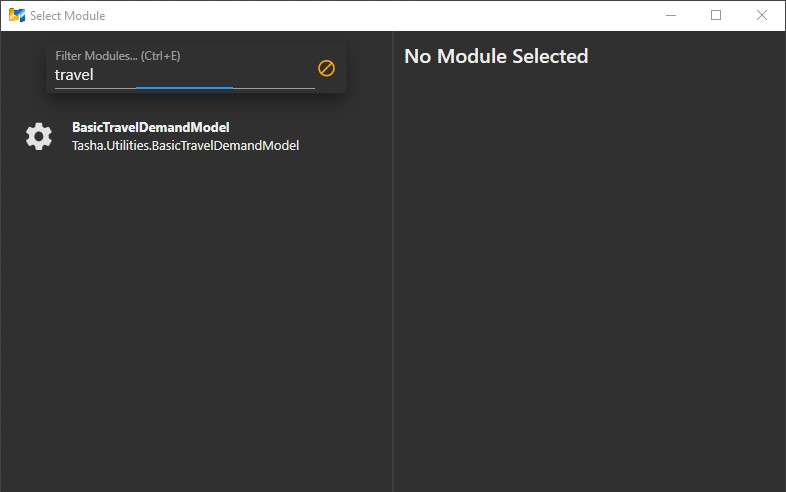
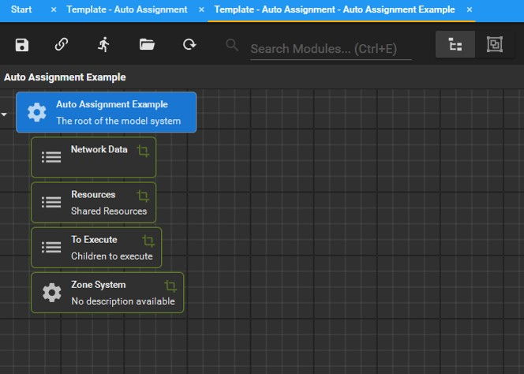

Create a New Project and a Model System
1. Create a New Project or Open an Existing Project
- Step 1: Create a new project

- Step 2: Enter the project name

2. Create a New Model System or Import a Model System File
- Step 1: Click the yellow button in the lower-right corner
- Step 2: Choosse from the following

- Step 3: Enter the model system name

- Step 4: Double-click to open the new model system

- The main screen should look like the following:

3. Load the Basic Travel Demand Model Template
- Step 1: Right-click and select "Set Module" or Press "Ctrl"+"M"

- Step 2: Type any keyword to find the "BasicTravelDemandModel" module
(Note: there is no space in between each word of the module name) 
- The model system should look like this:
